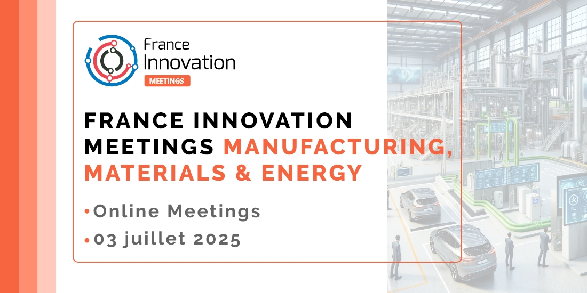

Le 3 juillet, cap sur l’innovation industrielle avec France Innovation
Publié le 15 juin 2025

Le 3 juillet 2025, l’écosystème français de l’innovation a rendez-vous pour une journée stratégique : le Manufacturing, Materials & Energy Meetings 2025, organisé par l’association France Innovation. Un événement 100 % digital qui promet de faire converger expertises, projets et ambitions autour de la recherche technologique, des matériaux avancés, de l’énergie et de l’industrie du futur.
Depuis sa création en 2018, France Innovation s’est imposée comme un acteur clé de la scène nationale en matière de R&D et de technologies appliquées. En s’appuyant sur un large réseau de partenaires publics et privés — startups, PME, centres techniques, laboratoires, ingénieries ou encore pôles de compétitivité — l’association œuvre à tisser des liens durables entre tous les acteurs de l’innovation. Et c’est précisément dans cette logique de mise en réseau que s’inscrit ce nouvel évenement.
Des rendez-vous d'affaires qualifiés
Pensée comme une véritable convention d’affaires digitale, cette journée propose un format flexible et accessible, où la création d'opportunité prime. Grâce à un système de matchmaking intelligent, les participants peuvent planifier à l’avance une série de rendez-vous BtoB de 30 minutes, ciblés et personnalisés selon leurs objectifs. Technologies émergentes, besoins industriels, partenariats stratégiques : tout est conçu pour optimiser la pertinence des échanges.
Startups en quête de partenaires industriels ou de visibilité, centres de R&D et laboratoires (publics et privés) souhaitant valoriser leurs travaux, acheteurs à la recherche de solutions concrètes, investisseurs à l’affût de pépites ou encore acteurs institutionnels curieux de détecter de nouveaux projets : chacun y trouvera sa place. Ce dispositif original de croisement automatisé des offres et des besoins permet d’optimiser chaque rencontre. En quelques clics, il est possible de sélectionner ses interlocuteurs clés et de bâtir un programme de rendez-vous sur mesure.
Un Networking 3.0 fluide et spontané
Au-delà des rendez-vous planifiés, la plateforme Vimeet offre un environnement propice à la discussion informelle : chat instantané, appels vidéo intégrés, gestion simplifiée des contacts.
Cette approche hybride permet de recréer une ambiance de salon professionnel… depuis votre bureau.
L’événement ambitionne de devenir un catalyseur d’alliances innovantes, capable d’initier de véritables projets collaboratifs. Une vision de l’événementiel professionnel qui mise sur l’efficacité, en transformant les rencontres en une démarche simple, accessible et productive pour tous les acteurs de l’innovation.
► Consultez le site internet de l'événement
Participer à France Innovation Manufacturing, Materials & Energy Meetings, c’est investir une journée pour :
- rencontrer des décideurs français et internationaux du secteur industriel,
- identifier de nouveaux partenaires technologiques, de recherche ou commerciaux,
- accélérer vos projets de développement produit, service ou procédé,
- renforcer votre visibilité auprès d’un écosystème ciblé.
À noter : La participation est gratuite pour les donneurs d’ordres et les investisseurs (sous réserve de validation du profil). Un forfait est requis pour les autres catégories.
Une offre spéciale réservée aux lecteurs de Robotech
En tant que partenaire de l’événement, Robotech met à disposition 3 codes de réduction de 20 % sur les frais d’inscription et les options proposées (vitrines digitales, présentations, etc.).
FIM_ROBOTECH
Infos pratiques
Date : jeudi 3 juillet 2025
Format : 100 % en ligne
Langue : français / anglais
Durée des rendez-vous : 30 minutes
Contact : fi-meetings@vimeet.events
Tél. : +33 (0)1 46 90 19 08